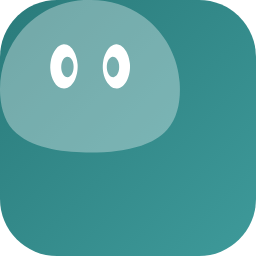
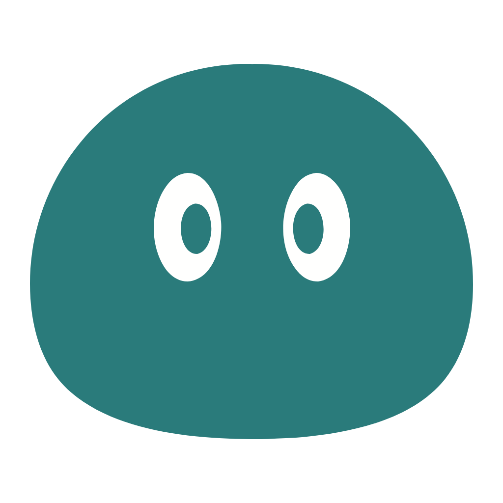

celadon design
v2.0.0
CUI 2.0 设计资产 · 全部色值实时读
tokens.css
，零硬编码
色卡 Color card
token 全量 · 对比度实算 · 关键配对校验
规范 Foundations
间距 · 圆角 · 层级 · 动效 · 边框（浅/暗分列）
CSS 约定 Conventions
逻辑属性 vs 物理属性（可切 RTL 对照）· 编码规范 CONVENTIONS.md
数据格式 Data format
四语对照 · 日期/相对时间/数字/单位/货币/排序 · 实时调 Intl.*
图标与品牌 Icons
品牌标识 · 图标系列（24 网格）· 三个来源 · 全量画廊
界面稿 Mock
1440×888 三栏 · 四语可切 · 浅/暗
Logo 与 App 图标 Logo and app icons
标记浅暗同版（一个 SVG）· App 图标方形画布、图形内缩 78% · 源 logo-app-celadon.svg
上一版的旧蓝色原版只作比对基准，不在这里展示：design/reference/logo-previous.svg
Logo 标记 · 浅暗同版
16
32
64
128

256
512

1024
App 图标 · 16–1024 七档（方形画布）
设计说明 README.md
token / 字体 / i18n / Logo 规则
tokens.less
唯一来源（改这里，别改产物）